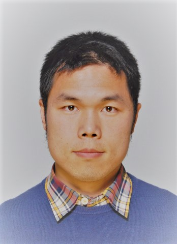

最近更新: 2022年01月14日 | Updated 14 Jan 2022
|  |
研究兴趣 Research Interests
|
目录 Contents
期刊 Journal
大会 Conference
研讨会 Workshop
2019
2018
2017
2016
2021
2019
2018
2017
2021
Solution to a Textbook Exercise: An Investigation with Logical Rigor of the Problem of the Area of a Triangle on a Cartesian Plane with One Vertex at the Origin [Read more]
Technical Blog : Comparing Monads in Haskell and in OCaml [Read more]
2020
A tutorial for Ocanren, the typed embedded relational programming langauge.
2018
2017
2020年4月至今 岗位名称：博士后研究员。 单位名称： JetBrains研究院 编程语言和工具实验室。导师： 德米特里·布利切夫 副教授。 单位地址：俄罗斯 圣彼得堡市。
April 2020 --- Present Postdoc Researcher. JetBrains Research, St. Petersburg, Russia. Supervisor: Dr Dmitri Boulytchev.
计算机科学博士 授予单位：赫瑞·瓦特大学。校址：英国 苏格兰 爱丁堡市。 学习年限：2016年09月至2019年08月。 博士导师：(正导师) 叶卡捷琳娜·科门达茨卡娅 副教授 和 （副导师）马克·劳森 教授。答辩日期: 2019年08月20日。答辨委员会成员：约翰·鲍尔 教授，安德鲁·爱尔兰 教授 和 阿尔伯特·伯格 教授
PhD in Computer Science Heriot-Watt University, UK. September 2016 - August 2019. Supervisors: Dr Ekaterina Komendantskaya and Prof. Mark V. Lawson. Viva Voce passed on 20 August with Prof. John Power, Prof. Andrew Ireland and Prof. Albert Burger.
计算机科学与国际商务硕士 授予单位：邓迪大学。校址：英国 苏格兰 邓迪市。学习年限： 2014年至2015年。硕士导师：叶卡捷琳娜·科门达茨卡娅 高级讲师
MSc with Distinction in Computer Science and International Business University of Dundee, UK. 2013-2015。 Supervisor: Dr Ekaterina Komendantskaya
通信工程学士 授予单位：湖南大学。 校址：中国长沙。 学习年限：2010年至2014年，其中2013-2014学年在英国邓迪大学交流学习。 毕业设计导师：埃里克·阿贝尔 教授
BEng in Telecommunication Engineering Hunan University, Changsha, China. 2010-2014. I visited the Univesity of Dundee during the 2013-2014 academic year, where Prof. Eric Abel supervised my degree project.
海口市2021年秋季中考招生分批次录取方案的 英文转述。该英文版探讨了分批次录取的主要思路和（不太复杂的）数学本质，但在技术细节上并不完全符合官方中文版的， 因此主要用作学习和参考。
A slightly math-flavored introduction to the idea of the batch enrolment system for high school admission adopted in the city of Haikou, the capital of the Chinese tropical island province Hainan, as of autumn of 2021.
2021年元旦假期译作：《OCaml编程语言历史》
I translated A History of OCaml from English into the simplified Chinese language during the New Year holiday of 2021.
2021年元旦假期译作：《地标式的专利诉讼案打破了塞尔登套在美国汽车产业上的枷锁 》
I translated Landmark patent case broke Selden's lock on auto industry from English into the simplified Chinese language during the New Year holiday of 2021.